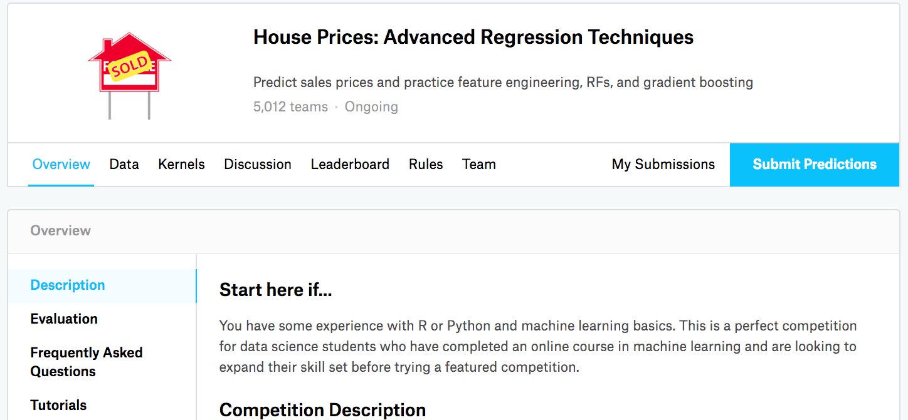

5.7. 在Kaggle上预测房价¶
既然我们已经介绍了一些基本工具， 用于构建和训练深层网络， 并用权重衰减和暂退法等技术对它们进行正则化， 我们就准备好通过参加一场Kaggle竞赛， 把所有这些知识付诸实践了。 房价预测竞赛是一个很好的起点。 这些数据相当通用，并没有表现出 可能需要专门模型的那种奇特结构（音频或视频数据可能会）。 该数据集由 De Cock (2011) 收集， 涵盖2006–2010年间艾奥瓦州埃姆斯（Ames）的房价。 它比 Harrison 和 Rubinfeld（1978）著名的波士顿房价数据集大得多， 拥有更多的样例和更多的特征。
在本节中，我们将带你了解 数据预处理、模型设计和超参数选择的细节。 我们希望通过这种动手实践的方式， 你能获得一些直觉，用来指导你作为数据科学家的职业生涯。
%matplotlib inline
import pandas as pd
import torch
from torch import nn
from d2l import torch as d2l
%matplotlib inline
import pandas as pd
from mxnet import autograd, gluon, init, np, npx
from mxnet.gluon import nn
from d2l import mxnet as d2l
npx.set_np()
%matplotlib inline
import jax
import numpy as np
import pandas as pd
from jax import numpy as jnp
from d2l import jax as d2l
%matplotlib inline
import pandas as pd
import tensorflow as tf
from d2l import tensorflow as d2l
5.7.1. 下载数据¶
在整本书中，我们将在各种下载的数据集上训练和测试模型。 这里，我们实现两个工具函数， 分别用于下载和解压 zip 或 tar 文件。 同样，我们跳过这类工具函数的实现细节。
def download(url, folder, sha1_hash=None):
"""Download a file to folder and return the local filepath."""
def extract(filename, folder):
"""Extract a zip/tar file into folder."""
5.7.2. Kaggle¶
Kaggle 是一个举办机器学习竞赛的热门平台。 每场竞赛都围绕一个数据集展开， 其中许多竞赛由利益相关方赞助， 为获胜方案提供奖金。 该平台帮助用户通过论坛和共享代码进行互动， 既促进合作，也促进竞争。 虽然追逐排行榜常常会失控， 研究者会短视地关注预处理步骤， 而不是提出根本性的问题， 但这样一个平台也具有巨大的价值： 它的客观性便于对相互竞争的方法进行直接的定量比较， 也便于共享代码， 让每个人都能了解哪些做法有效、哪些无效。 如果你想参加Kaggle竞赛， 首先需要注册一个账号 （见 图5.7.1）。

图5.7.1 Kaggle 网站。¶
在房价预测竞赛页面上，如 图5.7.2 所示， 你可以找到数据集（在“Data”标签页下）、 提交预测，并查看自己的排名。 URL 如下：


图5.7.2 房价预测竞赛页面。¶
5.7.3. 访问和读取数据集¶
请注意，竞赛数据分为训练集和测试集。 每条记录包括房屋的房产价值， 以及街道类型、建造年份、屋顶类型、地下室状况等属性。 这些特征由多种数据类型组成。 例如，建造年份用整数表示， 屋顶类型用离散的类别赋值表示， 其他特征则用浮点数表示。 而现实情况在这里就变得复杂起来： 对于某些样例，某些数据完全缺失， 缺失值被简单地标记为“na”。 每套房屋的价格只包含在训练集中 （毕竟这是一场比赛）。 我们会希望划分训练集来创建验证集， 但只有在把预测结果上传到Kaggle之后， 我们才能使用官方测试集来评估模型。 图5.7.2 中竞赛页面的“Data”标签页 提供了下载数据的链接。
作为开始，我们将使用 pandas 读入并处理数据， 我们已在
2.2节 中介绍过这个库。
为方便起见，我们可以下载并缓存Kaggle房价数据集。
如果缓存目录中已经存在与该数据集对应的文件， 并且其SHA-1与 sha1_hash
匹配， 我们的代码就会使用缓存文件， 避免用重复下载堵塞你的网络。
class KaggleHouse(d2l.DataModule):
def __init__(self, batch_size, train=None, val=None):
super().__init__()
self.save_hyperparameters()
if self.train is None:
self.raw_train = pd.read_csv(d2l.download(
d2l.DATA_URL + 'kaggle_house_pred_train.csv', self.root,
sha1_hash='585e9cc93e70b39160e7921475f9bcd7d31219ce'))
self.raw_val = pd.read_csv(d2l.download(
d2l.DATA_URL + 'kaggle_house_pred_test.csv', self.root,
sha1_hash='fa19780a7b011d9b009e8bff8e99922a8ee2eb90'))
训练数据集包含1460个样例、 80个特征和一个标签， 而验证数据包含1459个样例和80个特征。
data = KaggleHouse(batch_size=64)
print(data.raw_train.shape)
print(data.raw_val.shape)
5.7.4. 数据预处理¶
让我们从前四个样例中查看前四个特征、最后两个特征 以及标签（SalePrice）。
print(data.raw_train.iloc[:4, [0, 1, 2, 3, -3, -2, -1]])
可以看到，每个样例的第一个特征都是标识符。 它帮助模型识别每个训练样例。 虽然这很方便，但它不携带任何用于预测的信息。 因此，在把数据送入模型之前， 我们会把它从数据集中删除。 此外，鉴于数据类型多种多样， 我们需要先对数据进行预处理，才能开始建模。
我们从数值特征开始。 首先，我们采用一种启发式做法， 把所有缺失值替换为对应特征的均值。 然后，为了把所有特征放在同一尺度上， 我们对数据标准化，将特征重新缩放到零均值和单位方差：
其中 \(\mu\) 和 \(\sigma\) 分别表示均值和标准差。 为了验证这确实把我们的特征（变量） 变换为零均值和单位方差， 注意到 \(E[\frac{x-\mu}{\sigma}] = \frac{\mu - \mu}{\sigma} = 0\)， 以及 \(E[(x-\mu)^2] = (\sigma^2 + \mu^2) - 2\mu^2+\mu^2 = \sigma^2\)。 直观地说，我们标准化数据有两个原因。 第一，事实证明这对优化很方便。 第二，由于我们事先（a priori）并不知道哪些特征会是相关的， 我们不希望赋予某个特征的系数的惩罚比任何其他特征更多。
接下来我们处理离散值。 这类特征包括“MSZoning”等。
我们用独热编码替换它们， 方式与我们之前把多类标签转换为向量时相同 （见
4.1.1节）。
例如，“MSZoning”的取值为“RL”和“RM”。 去掉“MSZoning”这一特征后，
会创建两个新的指示特征 “MSZoning_RL”和“MSZoning_RM”，取值为0或1。
按照独热编码， 如果“MSZoning”的原始值为“RL”，
那么“MSZoning_RL”为1，“MSZoning_RM”为0。 pandas
包会自动为我们完成这一操作。
@d2l.add_to_class(KaggleHouse)
def preprocess(self):
# Remove the ID and label columns
label = 'SalePrice'
features = pd.concat(
(self.raw_train.drop(columns=['Id', label]),
self.raw_val.drop(columns=['Id'])))
# Standardize numerical columns
numeric_features = features.dtypes[features.dtypes!='object'].index
features[numeric_features] = features[numeric_features].apply(
lambda x: (x - x.mean()) / (x.std()))
# Replace NAN numerical features by 0
features[numeric_features] = features[numeric_features].fillna(0)
# Replace discrete features by one-hot encoding
features = pd.get_dummies(features, dummy_na=True)
# Save preprocessed features
self.train = features[:self.raw_train.shape[0]].copy()
self.train[label] = self.raw_train[label]
self.val = features[self.raw_train.shape[0]:].copy()
可以看到，这种转换把特征数量 从79个增加到331个（不包括ID列和标签列）。
data.preprocess()
data.train.shape
5.7.5. 误差度量¶
作为开始，我们将训练一个使用平方损失的线性模型。 不出所料，我们的线性模型不会带来能赢得竞赛的提交结果， 但它确实提供了一个健全性检查， 用来判断数据中是否包含有意义的信息。 如果我们在这里不能做到比随机猜测更好， 那么很可能是我们的数据处理有bug。 而如果一切顺利，线性模型将充当一个基准， 让我们对简单模型与最佳报告模型的接近程度有一些直觉， 从而了解更花哨的模型应该能带来多少收益。
对于房价，就像对股价一样， 我们更关心相对量而不是绝对量。 因此，我们往往更关心 相对误差 \(\frac{y - \hat{y}}{y}\)， 而不是绝对误差 \(y - \hat{y}\)。 例如，如果我们在估计俄亥俄州乡村一套房屋的价格时 偏差达到 $100,000， 而那里典型房屋的价值是 $125,000， 那么我们大概做得很糟糕。 另一方面，如果我们在加利福尼亚州的洛斯阿尔托斯山 也偏差这么大的金额， 这可能代表一个极其准确的预测 （那里的房屋中位价超过 $400 万）。
解决这个问题的一种方法， 是在价格估计值的对数上度量差异。 事实上，这也是竞赛用来评估提交质量的官方误差度量。 毕竟，\(|\log y - \log \hat{y}| \leq \delta\) 中的 \(\delta\) 取值很小， 就意味着 \(e^{-\delta} \leq \frac{\hat{y}}{y} \leq e^\delta\)。 由此得到预测价格对数与标签价格对数之间的 如下均方根误差：
@d2l.add_to_class(KaggleHouse)
def get_dataloader(self, train):
label = 'SalePrice'
data = self.train if train else self.val
if label not in data: return
get_tensor = lambda x: torch.tensor(x.values.astype(float),
dtype=torch.float32)
# Logarithm of prices
tensors = (get_tensor(data.drop(columns=[label])), # X
torch.log(get_tensor(data[label])).reshape((-1, 1))) # Y
return self.get_tensorloader(tensors, train)
@d2l.add_to_class(KaggleHouse)
def get_dataloader(self, train):
label = 'SalePrice'
data = self.train if train else self.val
if label not in data: return
get_tensor = lambda x: np.array(x.values.astype(float),
dtype=np.float32)
# Logarithm of prices
tensors = (get_tensor(data.drop(columns=[label])), # X
np.log(get_tensor(data[label])).reshape((-1, 1))) # Y
return self.get_tensorloader(tensors, train)
@d2l.add_to_class(KaggleHouse)
def get_dataloader(self, train):
label = 'SalePrice'
data = self.train if train else self.val
if label not in data: return
get_tensor = lambda x: jnp.array(x.values.astype(float),
dtype=jnp.float32)
# Logarithm of prices
tensors = (get_tensor(data.drop(columns=[label])), # X
jnp.log(get_tensor(data[label])).reshape((-1, 1))) # Y
return self.get_tensorloader(tensors, train)
@d2l.add_to_class(KaggleHouse)
def get_dataloader(self, train):
label = 'SalePrice'
data = self.train if train else self.val
if label not in data: return
get_tensor = lambda x: tf.constant(x.values.astype(float),
dtype=tf.float32)
# Logarithm of prices
tensors = (get_tensor(data.drop(columns=[label])), # X
tf.reshape(tf.math.log(get_tensor(data[label])), (-1, 1))) # Y
return self.get_tensorloader(tensors, train)
5.7.6. \(K\)折交叉验证¶
你可能还记得，我们在 3.6.3节 中介绍了交叉验证， 并讨论了如何处理模型选择。 我们将很好地利用它来选择模型设计并调整超参数。 我们首先需要一个函数，它返回 \(K\) 折交叉验证过程中数据的第 \(i^\textrm{th}\) 折。 它的做法是把第 \(i^\textrm{th}\) 段切片出来作为验证数据， 其余部分作为训练数据返回。 请注意，这不是处理数据的最有效方式； 如果我们的数据集大得多， 我们肯定会采用更聪明的做法。 但这种额外的复杂性可能会不必要地使代码难以理解， 因此鉴于问题很简单， 我们可以放心地在这里省略它。
def k_fold_data(data, k):
rets = []
fold_size = data.train.shape[0] // k
for j in range(k):
idx = range(j * fold_size, (j+1) * fold_size)
rets.append(KaggleHouse(data.batch_size, data.train.drop(index=idx),
data.train.loc[idx]))
return rets
在 \(K\) 折交叉验证中训练 \(K\) 次时， 返回的是平均验证误差。
def k_fold(trainer, data, k, lr):
val_loss, models = [], []
for i, data_fold in enumerate(k_fold_data(data, k)):
model = d2l.LinearRegression(lr)
model.board.yscale='log'
if i != 0: model.board.display = False
trainer.fit(model, data_fold)
val_loss.append(float(model.board.data['val_loss'][-1].y))
models.append(model)
print(f'average validation log mse = {sum(val_loss)/len(val_loss)}')
return models
5.7.7. 模型选择¶
在这个例子中，我们选取一组未经调优的超参数， 并让读者自行改进模型。 找到一组好的选择可能需要时间， 这取决于要优化的变量有多少。 当数据集足够大、超参数属于常规类型时， \(K\) 折交叉验证往往对多重检验具有相当的稳健性。 然而，如果我们尝试的选项数量大得不合理， 我们可能会发现验证性能不再能代表真实误差。
trainer = d2l.Trainer(max_epochs=10)
models = k_fold(trainer, data, k=5, lr=0.01)
请注意，有时一组超参数的训练误差数值可以非常低， 而 \(K\) 折交叉验证上的误差数值却高得多。 这表明我们过拟合了。 在整个训练过程中，你会希望同时监控这两个数值。 过拟合较轻可能表明我们的数据足以支撑更强大的模型。 严重的过拟合则可能表明， 我们可以通过引入正则化技术来获益。
5.7.8. 在Kaggle上提交预测¶
既然我们已经知道怎样算是一组好的超参数选择， 我们就可以用所有 \(K\)
个模型 计算测试集上的平均预测。 把预测结果保存为csv文件，
可以简化向Kaggle上传结果的操作。 下面的代码会生成一个名为
submission.csv 的文件。
preds = [model(torch.tensor(data.val.values.astype(float), dtype=torch.float32))
for model in models]
# Taking exponentiation of predictions in the logarithm scale
ensemble_preds = torch.exp(torch.cat(preds, 1)).mean(1)
submission = pd.DataFrame({'Id':data.raw_val.Id,
'SalePrice':ensemble_preds.detach().numpy()})
submission.to_csv('submission.csv', index=False)
preds = [model(np.array(data.val.values.astype(float), dtype=np.float32))
for model in models]
# Taking exponentiation of predictions in the logarithm scale
ensemble_preds = np.exp(np.concatenate(preds, 1)).mean(1)
submission = pd.DataFrame({'Id':data.raw_val.Id,
'SalePrice':ensemble_preds.asnumpy()})
submission.to_csv('submission.csv', index=False)
preds = [model.apply({'params': trainer.state.params},
jnp.array(data.val.values.astype(float), dtype=jnp.float32))
for model in models]
# Taking exponentiation of predictions in the logarithm scale
ensemble_preds = jnp.exp(jnp.concatenate(preds, 1)).mean(1)
submission = pd.DataFrame({'Id':data.raw_val.Id,
'SalePrice':np.asarray(ensemble_preds)})
submission.to_csv('submission.csv', index=False)
preds = [model(tf.constant(data.val.values.astype(float), dtype=tf.float32))
for model in models]
# Taking exponentiation of predictions in the logarithm scale
ensemble_preds = tf.reduce_mean(tf.exp(tf.concat(preds, 1)), 1)
submission = pd.DataFrame({'Id':data.raw_val.Id,
'SalePrice':ensemble_preds.numpy()})
submission.to_csv('submission.csv', index=False)
接下来，如 图5.7.3 所示， 我们可以在Kaggle上提交预测， 并查看它们与测试集上实际房价（标签）的对比情况。 步骤非常简单：
登录Kaggle网站，访问房价预测竞赛页面。
点击“Submit Predictions”或“Late Submission”按钮。
点击页面底部虚线框中的“Upload Submission File”按钮，选择要上传的预测文件。
点击页面底部的“Make Submission”按钮，查看结果。

图5.7.3 向Kaggle提交数据。¶
5.7.9. 小结与讨论¶
真实数据往往混合了不同的数据类型，需要进行预处理。 把实值数据重新缩放到零均值和单位方差是一个很好的默认做法。用均值替换缺失值也是如此。 此外，把类别特征转换为指示特征，可以让我们像处理独热向量一样处理它们。 当我们往往更关心相对误差而不是绝对误差时， 可以在预测值的对数上度量差异。 要选择模型并调整超参数， 我们可以使用 \(K\) 折交叉验证。
5.7.10. 练习¶
把本节中的预测结果提交到Kaggle。它们表现如何？
用均值替换缺失值总是好主意吗？提示：你能否构造一种情形，使得这些值不是随机缺失的？
通过 \(K\) 折交叉验证调整超参数，提高得分。
通过改进模型（例如层、权重衰减和暂退法）提高得分。
如果我们不像本节这样对连续数值特征进行标准化，会发生什么？